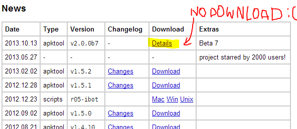
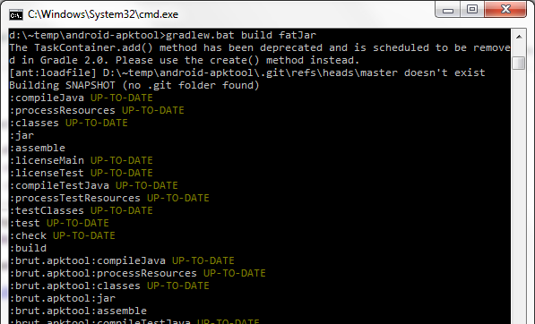
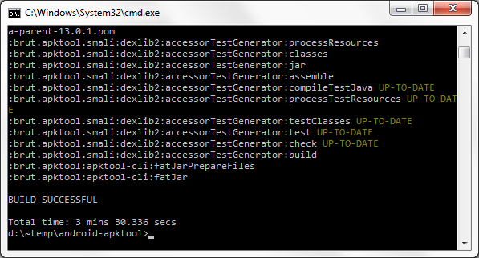

How to build android-apktool 2.00 (beta) from sources
Android-apktool 2.00 promises a lot of cool things: Smali/Backsmali 2.0, Smali debugging (last time we saw this great feature in android-apktool 1.4.1, it broke in 1.4.2 and later releases, and now it’s back!), numerous bugfixes etc. The only problem is the version 2.00 is not released at the moment. It’s still in beta, no compiled JARs are available on the download page:

So this post is for reverse engineers who want to build android-apktool of version 2.00 (beta) from sources and play with all that cool stuff right now :) Here is a detailed 1-2-3 steps instruction for Windows (it’s based on the wiki page, I just added some screenshots and notes).
Step 1
Check prerequisites:
- Windows PC
- Java 1.7 installed
aapt.exein PATH
Step 2
Download ZIP archive with the latest sources and unzip it to any local folder, e.g. to d:\~temp\android-apktool\. By the way, if you have no aapt.exe on your PC, you can find it in d:\~temp\android-apktool\brut.apktool\apktool-lib\src\main\resources\prebuilt\aapt\windows\ and add it to your PATH after the second step.
Step 3
Open CMD console, go to d:\~temp\android-apktool\, and run
gradlew.bat build fatJar
Building is started now:

After 3-5 minutes, you should see:

Well, now just go to d:\~temp\android-apktool\brut.apktool\apktool-cli\build\libs\ and find the .jar file there. Check if it is the JAR you need:

Yes, it was so easy :)
Wanna say something?
Commenting is not available in this blog, but you can write me a letter or message. Please, note that English is not my native language. I'm sorry for mistakes/missprints, if any.
Prev: User-defined GDB commands on iOSNext: Installing LLDB